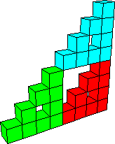

Block Fractals
Sample - Volume
Here we compute the volumes of levels 1, 2, and 3, and the volume of the limiting shape.
 |
 |
 |
| Level 1 |
Level 2 |
Level 3 |
| Level | Side Length | Number of Cubes | Cube Volume | Total Volume |
| 1 | 1 | 3 | 1 |
V1 = 3*1 |
| 2 | 1/2 | 32 |
(1/2)3 = 1/8 | V2 = 32*(1/8) |
| 3 | 1/4 | 33 |
(1/4)3 = (1/8)2 |
V3 = 33*(1/8)2 |
| ... | ... | ... |
... | ... |
| n | 1/2n-1 | 3n |
(1/2n-1)3 = (1/8)n-1 |
Vn = 3n*(1/8)n-1 = 3*(3/8)n-1 |
|
 |
|
| | Vol vs level |
| So the limiting shape has volume 0. |
| This is no surprise: the limiting shape is a
right isosceles gasket, having dimension Log(3)/Log(2) < 3. |
| Volume is a 3-dimensional measure, so the volume of a Log(3)/Log(2)-dimensional object
is 0. |
Return to sample.